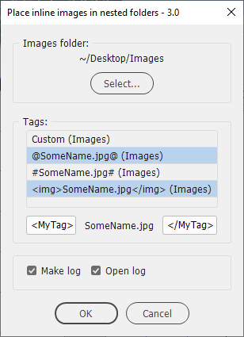
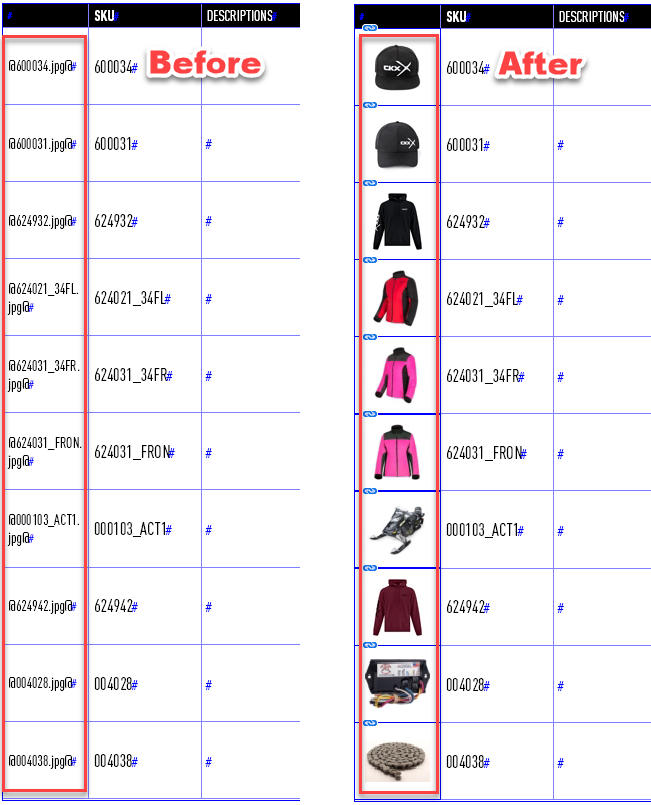
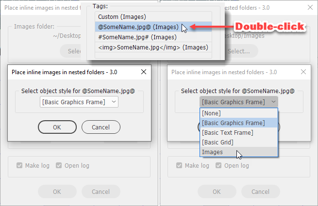
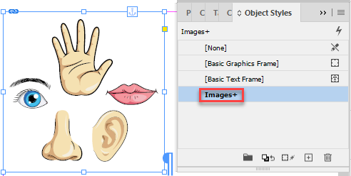
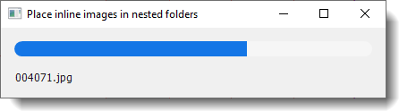
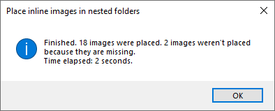
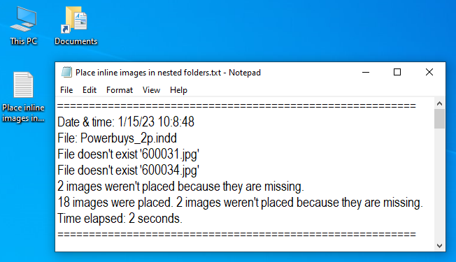
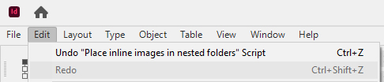

Place inline images in nested folders
Script for InDesign.Version 3.0. Written by Kasyan. The idea and financial support by Jean-Claude Tremblay.
This is the most advanced script I wrote for placing images (see the list of links at the bottom of the page). It allows you to select three hardcoded and one custom tag for delimiting image file names. The idea is simple: the script finds text between two tags – e.g. @SomeName.tif@ – and replaces it with the image that has the same name.

The script looks for image files in the selected Images folder and its nested folders.
There are three hardcoded tags that you can select in the dialog box:
- @SomeName.jpg@
- #SomeName.jpg#
- <img>SomeName.jpg</img>
Also, there’s one custom tag that you can change to your liking in the dialog box: <MyTag>SomeName.jpg</MyTag> by default. You can select one, two, three, or all four tags in any combination using Shift or Ctrl (Command) keys.
By the term hardcoded I mean that you have to use them as they are, or edit the script. (Read technical details if you want to edit the script to change the existing or add new tags).

You can choose an object style to be applied to the frames containing placed images which can control various parameters: fitting, size, etc. You can select a different style for every tag. To do this, double-click a tag in the dialog box and another window will pop up for you to pick a style. In this way, you can apply a different style (formatting) to every tag if you use different tags for different types of images. The script remembers the selected settings so on the next run, you don’t have to reselect them.

Example of object style applied to the frame containing the placed image:

The script has a progress bar displaying the currently being placed file name.

After the script is complete, a brief report pops up, like so:

For more detailed information, make sure the Make log check box is turned on. The script will make a log on the desktop listing all unplaced images.

If you turn on the Open log check box, the script will open the log file automatically in the default text editor.
If you are not happy with the result, you can undo (and redo) the whole script.

If you want to edit the script to change or add new tags or add more supported image formats — you don’t have to be a programmer for this — read instructions and technical details here.
Click here to download the script.
If you found my scripts useful and want me to develop more free scripts, consider supporting me by donating via PayPal directly to my e-mail: askoldich [at] yahoo [dot] com. (Due to PayPal's restrictions for Ukraine, I can't have a Donate button on my site.)
See also similar scripts: